概論
神里綾人は元素スキルにより自身を強化し戦うアタッカーである。
神里綾人は元素スキルを発動すると「滝廻鑑花」状態に入り、通常攻撃で水元素範囲ダメージを与えることができる。また、元素爆発により範囲内のキャラクターの通常攻撃を強化し、敵に水元素ダメージを与える領域を生成できる。
元素スキルや元素爆発を強化するため、会心率や会心ダメージ、攻撃力を強化する武器・聖遺物を選定すると良いだろう。
ステータス
ステータス
和名/英名 : 神里綾人 / Kamisato Ayato
命ノ星座 : 神守柏座
神の目 : 水
誕生日 : 3月26日
称号 : 磐祭葉守
所属 : 社奉行
実装バージョン : 2.6
各国CV
日本語 CV : 石田彰
中国語 CV : 赵路
英語 CV : Chris Hackney
韓国語 CV : 장민혁
突破ステータス
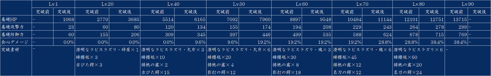素材合計：
 ×1 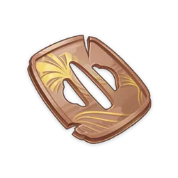×18 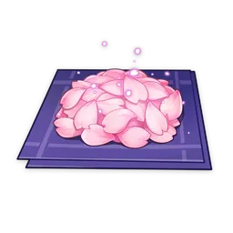×168
×1 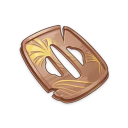×18 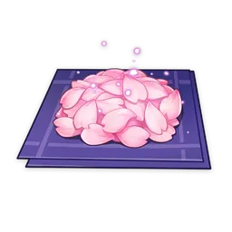×168
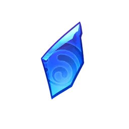×9 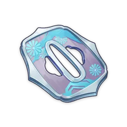×30 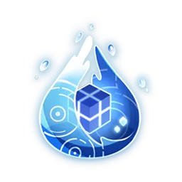×46
 ×9 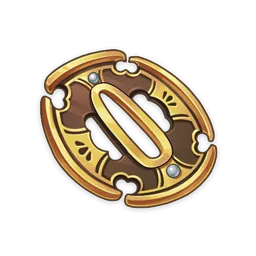×36
×9 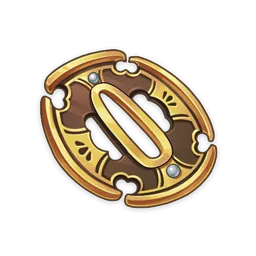×36
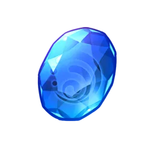×6
天賦
通常攻撃・神里流・転
通常攻撃
剣による最大5段の連続攻撃を行う。
重撃
一定のスタミナを消費し、前方へ突進と同時に居合斬りを見舞う。
落下攻撃
空中から落下し地面に衝撃を与える。経路上の敵を攻撃し、落下時に範囲ダメージを与える。
素材合計：
 ×3 ×6 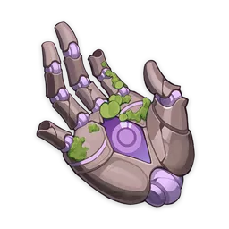×6
×3 ×6 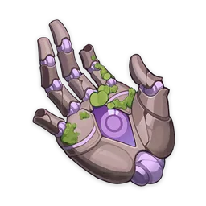×6
 ×21 ×22 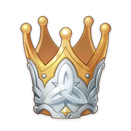×1
×21 ×22 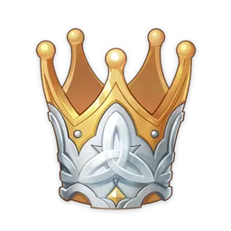×1
 ×38 ×31
×38 ×31
神里流・鏡花
神里綾人は素早く移動後、「滝廻鑑花」状態に入り、元の位置に「水の幻影」を創造する。
水の幻影は形成後、周囲に敵が存在する場合または継続時間終了時に破裂し、水元素範囲ダメージを与える。
滝廻鑑花
この状態の神里綾人は瞬水剣で素早い攻撃を繰り出し、通常攻撃は元素付与によって他の元素に変化しない水元素範囲ダメージへと変わる。
その他、以下の効果を持つ。
・瞬水剣が敵に命中すると、神里綾人に「浪閃」効果を付与し、神里綾人自身の現在のHP上限を基準に、瞬水剣のダメージがアップする。初期状態では、浪閃を最大4層重ね掛けでき、瞬水剣の攻撃を通して0.1秒ごとに最大1層獲得できる。滝廻鑑花状態が終了した時に効果は消失する。
・神里綾人の中断耐性がアップする。
・重撃と落下攻撃が発動できなくなる。
滝廻鑑花状態は神里綾人が退場する時に解除される。滝廻鑑花状態で再度神里流·鏡花を発動すると、既存の滝廻鑑花状態が解除される。
「一体いつから、手応えを感じていたように錯覚していたのですか？」
——武芸だけでなく、計略に関することも同様である。しかし、他の二つの奉行に座している当主の面子を立てるためにも、この言葉は言うべきではない。それゆえ、これを聞いたことのある人はトーマ、一斗、綾華の三人だけである。
神里流・水囿
清浄之園囿を展開し、その場に存在する雑音をすべて消し去る。
持続的に水沫剣を落とし、範囲内の敵に水元素ダメージを与え、中にいるキャラクターの通常攻撃ダメージをアップさせる。
「見えましたよ。この静水の中、貴方の脈打つ心の波紋が。」
神里流・峰を纏いし清滝
神里流・鏡花は下記の効果を持つ。
・発動後、神里綾人は2層の浪閃効果を獲得する。
・水の幻影が破裂すると、神里綾人は重ね掛け上限に相当する浪閃効果を獲得する。
神里流・満ちゆく破月
神里綾人が待機中の時、元素エネルギーが40未満の場合、1秒毎に元素エネルギーを2回復する。
神里流・日常茶飯
料理を完璧調理した時、18%の確率で「微妙な」品質の同一料理を獲得する。
命ノ星座
１凸：鏡華風姿
HP50%以下の敵に対して、瞬水剣によるダメージ+40%
２凸：世に源泉ありて
浪閃の重ね掛け上限が5層になる。神里綾人が3層以上の浪閃状態の時、HP上限が50%アップする
３凸：無意弄花
神里流・鏡花のスキルLv.+3
最大Lv.15まで
４凸：細流厭わず
神里流・水囿発動後、周囲チーム全員の通常攻撃速度+15%、継続期間15秒
５凸：万水一露
神里流・水囿のスキルLv.+3
最大Lv.15まで
完凸：濫觴無底
神里流・鏡花発動後、神里綾人の次に発動する瞬水剣が敵に命中した時、神里綾人の攻撃力450%分のダメージを持つ瞬水剣を2回追加で発動する
追加で発動する2回の瞬水剣は浪閃の効果を受けない